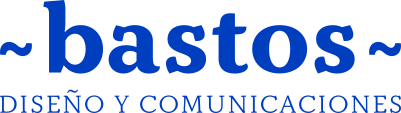

Primer trimestre · Escuchar
Cómo se produce hoy la comunicación y qué sabe Coipsa.

Estudio Bastos · 2 de octubre de 2026
Un servicio de comunicaciones hecho por un estudio de diseño. Ordenamos la estrategia, el sistema gráfico y los canales, y construimos las herramientas con que el equipo produce cada pieza.
Está pensado para que cada año necesite menos horas. El primer año lo construimos junto al equipo de comunicaciones de Coipsa. Desde el segundo, el equipo produce con ese sistema y nuestro trabajo baja a la mitad.
Trabajamos en todo a la vez desde el primer mes. El método de Bastos marca el foco de cada trimestre, y cada parte del trabajo avanza en paralelo.
Cómo se produce hoy la comunicación y qué sabe Coipsa.
Estrategia, pilares de contenido y metas.
El sistema gráfico y las herramientas, ajustados con lo aprendido.
Todo en uso, y el reporte del año contra la línea base.
LinkedIn e Instagram desde el primer mes, con plantillas iniciales. El sistema gráfico se afina con lo que muestran los indicadores.
Una sesión al mes con el equipo de comunicaciones, las piezas del mes y el reporte de indicadores.
Las elegimos mirando el trabajo diario del equipo y las construimos por partes. Cada parte se usa apenas está lista.
Parte con lo que Coipsa ya publica y crece durante el año.
Las herramientas van en los planes Redes y herramientas, y Completo. La sección de conocimiento, en el plan Completo.
Cada parte del trabajo tiene un indicador principal. En el primer trimestre medimos cómo están hoy, y al cerrarlo fijamos las metas con esa línea base.
| Parte | Indicador principal | También medimos | Línea base |
|---|---|---|---|
| Redes | Rendimiento por formato: interacciones de columnas, noticias y videos | Tasa de interacción en LinkedIn · crecimiento y alcance en Instagram | Estadísticas actuales de LinkedIn. Instagram parte en cero |
| Sección de conocimiento | Lectores que vuelven | Visitas que llegan desde LinkedIn · consultas y contactos | Google Analytics del sitio actual |
| Herramientas a medida | Horas de producción por pieza | Piezas hechas por el equipo | Registro de tiempos durante el primer mes |
| Trabajo mensual | Publicaciones del calendario cumplidas | Horas usadas | — |
Cada mes entregamos un reporte con los indicadores, lo hecho y las horas usadas.
Los tres planes siguen el mismo año de trabajo. Desde el segundo año el equipo ya trabaja con el sistema. Dedicamos la mitad de las horas, y el valor baja a la mitad.
Ordena LinkedIn, abre Instagram y empieza a medir.
Suma herramientas que aceleran el trabajo diario del equipo.
Suma un lugar en coipsa.cl donde vive lo que Coipsa sabe.
Valores netos, más IVA.